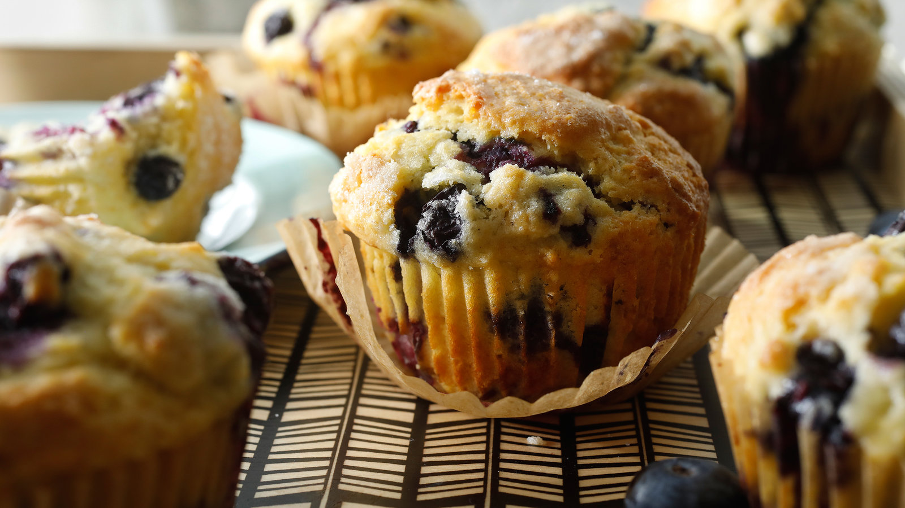

A muffin is an individual-sized, baked quick bread product.
Muffins in the United States are similar to cupcakes in size and cooking methods, the main difference being that cupcakes tend to be sweet desserts using cake batter and which are often topped with sugar frosting. Muffins are available in both savory varieties, such as cornmeal and cheese muffins, or sweet varieties such as blueberry, chocolate chip, lemon or banana flavours. Muffins are often eaten as a breakfast food. Coffee may be served to accompany muffins. Fresh baked muffins are sold by bakeries, donut shops and some fast food restaurants and coffeehouses. Factory baked muffins are sold at grocery stores and convenience stores and they are also served in some coffee shops and cafeterias.
Outside the United Kingdom, an English muffin is a flatter disk-shaped, typically unsweetened bread of English origin. These muffins are popular in Commonwealth countries and the United States. English muffins are often served toasted for breakfast. English muffins may be served with butter or margarine. English muffins may be topped with sweet toppings, such as jam or honey, or savoury toppings (e.g., round sausage, cooked egg, cheese or bacon). English muffins are typically eaten as a breakfast food.
Recipes for quick bread muffins are common in 19th-century American cookbooks. Recipes for yeast-based muffins, which were sometimes called "common muffins" or "wheat muffins" in 19th-century American cookbooks, can be found in much older cookbooks. In her Boston Cooking-School Cook Book, Fannie Farmer gave recipes for both types of muffins, both those that used yeast to raise the dough and those that used a quick bread method, using muffin rings to shape the English muffins. Farmer indicated that stove top "baking", as is done with yeast dough, was a useful method when baking in an oven was not practical.
The Perfect Muffin
The perfect muffin is the one to find. It must be moist, yet thouroughly baked, prefereably with a glazed mufin top that may be provide an ever-so-slight crunch when bit
To find the perfect muffin, one must search places frequented by muffins. Start with bakeries and local brunch spots
I found my favorite muffin while waiting in line to get brunch. Quite the find! It was a chocolate chip cream cheese muffin, still warm and melty choclate from the oven. It was divine!
It's best to start the search sooner than later. Best of luck!
The Hazards of Muffins
Be forewarned! Once you have muffin, you ain't stopping for nothin'!
 This batch of fresh blueberry muffins can keep you occupied for hours with their tantilizing muffinnessMuffins are best kept warm. In cold conditions, they may turn hard and difficult. They will not like to dance of course. In prolonged cold, they may even turn murderous. It's best to come prepared - keept your muffin warm!